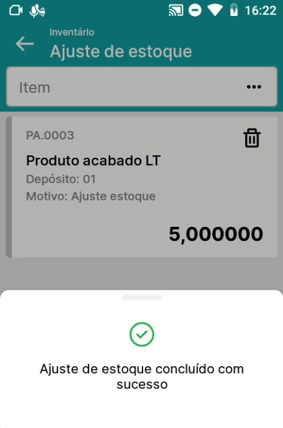

Ajuste de estoque

Acessando o menu Ajuste de estoque, será aberta a lista de itens, no primeiro momento estará vazia. Selecione o item através da lista de itens ou leitura via código de barras do código do item/código de barras.

Na lista de posição e lotes/séries, selecione a posição ou lote/série desejado manualmente ou através da leitura via código de barras.
Nos detalhes do item, preencha a quantidade e informe o Motivo de ajuste, Regra de distribuição e Projeto. Das três opções, é obrigatório o preenchimento apenas do Motivo de ajuste.


Concluindo o processo no menu Ajuste de estoque, será gerado no SAP o documento Saída de mercadorias.